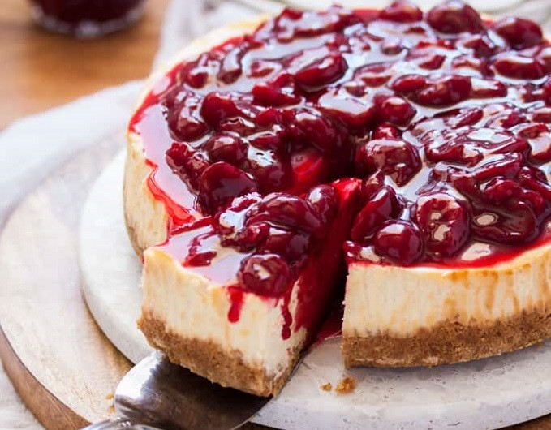

VİŞNELİ CHEESECAKE TARİFİ

MALZEMELER
- 200g burçak bisküvi
- 60g eritilmiş tereyağ
- 600g labne
- 400ml sıvı krema
- 1 su bardağı şeker
- 3 adet yumurta
- 3 yemek kaşığı nişasta
- 1 paket vanilya
- 300g dondurulmuş vişne
- 1 su bardağı su
- 2 yemek kaşığı nişasta(yarım çay bardağı suda açıyoruz)
- 5 yemek kaşığı şeker
HAZIRLANIŞI
- İlk olarak kelepçeli kek kalıbının tabanına yağlı kağıt serilir ve kağıdın fazla kısımları kesilir.Kelepçeli kalıbın dışı aliminyum folyo ile kaplanır.
- Bisküviler un haline getirilir ve eritilmiş tereyağ ile karıştırılır daha sonra kalıbın tabanına yerleştirilir.
- Diğer aşamayı hazırlarken kalıbı 15-20 dk buzdolobında bekletiyoruz
- Cheesecake hamuru için labne ve kremayı mikserle çırpalım İçerisine şekeri de ilave ederek çırpmaya devam edelim.
- Yumurta nişasta ve vanilyayı da ilave edip karışıncaya kadar çırpalım.
- Kek kalıbını buzdolabından çıkaralım ve hazırladığımız hamuru aktaralım
- 140 derece fırında 60 dk pişirelim.piştikten sonra 1 saat fırın kapağını açmadan dinlendirelim.
- Dondurulmuş vişne,şeker ve 1 bardak suyu tencereye alalım suda açtığımız nişastamızı da tencereye alalım kartırarak kaynayana kadar pişirelim.
- Hazırladığımız sosu soğuyan cheesecake'in üzerine ilave edelim.
- AFİYET OLSUN...